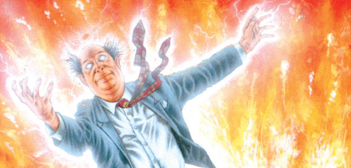

From Third World War in the pages of Crisis, comes contemporary Slaine-a-like Finn: an eco-terrorist with a mullet, battling evil alien gods in the guise of ... *tremble* ... accountants.
Art by Jim Elston & Kevin Wicks
| Story Title | Parts | Pages | w indicates a wraparound coverCovers | Year(s) | Issues | Writer | Artist | Colourist | Letterer |
|---|---|---|---|---|---|---|---|---|---|
| Book I | 10 | 60 | 770: Jim Elston 777: Mick Austin 2 | 1992 | Reprints: M329 (supplement)770-779 | Pat Mills Tony Skinnervarious | Jim Elston Kevin Wicksvarious | <-- | Steve Potter |
| Book II | 10 | 60 | 807: Mick Austin 811: Mick Austin 816: Mick Austin 3 | 1992-1993 | Reprints: M361 (supplement)807-816 | Pat Mills Tony Skinnervarious | Jim Elston Kevin Wicksvarious | <-- | Steve Potter |
| The Origin | 4 | 28 | 927: Paul Johnson 1 | 1995 | 924-927 | Pat Mills | Liam McCormack-Sharp | <-- | Annie Parkhouse |
| Interventions | 20 | + 1 credit pages120 | 935: Sean Phillips 945: Sean Phillips 2 | 1995 | 928-937, 940-949 | Pat Mills | Paul Staples | <-- | Annie Parkhouse |
| Season of the Witch | 9 | + 1 credit pages54 | 991: Greg Staples 2 | 1996 | 991-999 | Pat Mills Tony Skinnervarious | Paul Staples | <-- | Annie Parkhouse |
| >> Posters / Teasers << | |||||||||
| Whole Lot of Magic Going On | 1 | 1 | 0 | 1992 | 769 | n/a | Jim Elston | <-- | n/a |
| The War Rages On | 1 | 1 | 0 | 1992 | 806 | n/a | Mick Austin | <-- | n/a |
| Peace and Goodwill on Earth | 1 | 1 | 0 | 1992 | 815 | n/a | Mick Austin | <-- | n/a |
| Dark Magick | 1 | 1 | 0 | 1993 | 838 | n/a | Paul Staples | <-- | n/a |
From Tharg's Thrill ArchivesPart 6: Finn | 1 | 1 | 0 | 1993 | 863 | n/a | Jim Elston | <-- | n/a |
| >> Features << | |||||||||
Title page.The Origin | 1 | 1 | 0 | 1995 | 924 | n/a | Sean Phillips | <-- | n/a |
| year | episodes | pages |
| 1984 | 0 | 0 |
| 1985 | 0 | 0 |
| 1986 | 0 | 0 |
| 1987 | 0 | 0 |
| 1988 | 0 | 0 |
| 1989 | 0 | 0 |
| 1990 | 0 | 0 |
| 1991 | 0 | 0 |
| 1992 | 19 | 114 |
| 1993 | 1 | 6 |
| 1994 | 0 | 0 |
| 1995 | 24 | 148 |
| 1996 | 9 | 54 |
| 1997 | 0 | 0 |
| 1998 | 0 | 0 |
| 1999 | 0 | 0 |
| 2000 | 0 | 0 |
| 2001 | 0 | 0 |
| 2002 | 0 | 0 |
| 2003 | 0 | 0 |
| 2004 | 0 | 0 |
Comic strip data (excludes other content):